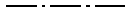
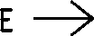

Op een tekening de volgende verwijzingsaanduidingen gebruiken:
 verwijzing naar een doorsnede
verwijzing naar een doorsnede
 verwijzing naar een aanzicht
verwijzing naar een aanzicht
 verwijzing naar details
verwijzing naar details
 verwijziging naar een wijziging
verwijziging naar een wijziging
Een verwijzing naar doorsnede aangeven met een zgn. doorsnede-symbool.
Het doorsnede-symbool bestaat uit een lijn met als lijntype "gemengde streeplijn" ().
De lijndikte van deze lijn bedraagt 0.18 mm.
Aan de uiteinden is deze lijn voorzien van een verdikking met haaks erop pijlpunt welke voorzien is van een letter of cijfer die de doorsnede specificeert. De pijl geeft hierbij kijkrichting aan.
De lijndikte van de het verdikte gedeelte en de pijl bedraagt 0.35 mm.
Het lettertype van de letters en getallen is conform de richtlijn
met een letterhoogte
van 5.0 mm.
Indien het de overzichtelijkheid van de tekening ten goede komt mag een doorsnede aanduiding met alleen het verdikte gedeelte en de pijl met letter of cijfer worden aangegeven.
voorbeeld:

Een verwijzing naar aanzicht aangeven met een zgn. aanzicht-symbool.
Het aanzicht-symbool bestaat uit een pijl en een letter of cijfer die het aanzicht specificeert.
De lijndikte van de pijl bedraagt 0.35 mm.
Het lettertype van de letters en getallen is conform de richtlijn
met een letterhoogte
van 5.0 mm.
voorbeeld:

Een verwijzing naar een detail aangeven met een omkadering die bestaat uit een cirkel voorzien van een bijschrift met pijlpunt conform de richtlijn bijschriften
De lijndikte van de cirkel bedraagt 0.18 mm.
voorbeeld:

Een verwijzing naar een wijziging aangeven met een wijzigingspijl.
De wijzigingspijl bestaat uit een pijl met een ingeschreven wijzigingsletter of cijfer.
Dezelfde letter/getal opnemen in de wijzigingsstrook (
)
Het lettertype van de letters en getallen is conform de richtlijn
met een letterhoogte van 7.0 mm.
voorbeeld: